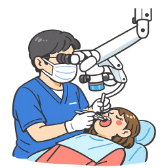
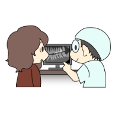

ご自身のお口の中の写真を使って、現在の状況や、治療途中、 治療終了の各段階でわかりやすく説明し、納得していただきながら治療を進めていきます。治療法などについてわからないことがありましたら、 遠慮なくお聞きください。
表面麻酔に加え、歯科口腔外科出身ドクターの熟練の技術、
細い注射針と体温程度に温めた注射液を併用することで、
麻酔の痛みを軽減しています。
また最新の機器と技術で痛みが少ない治療の提供に努めています。
今は何ともなくても、痛みが出てからでは、
かなり病状が進行していることに…
定期的に歯の検診を受けていただき、
歯槽膿漏（歯周病）や虫歯になる前に予防し、
ご自身の歯をできるだけ残すことに力を入れています
徹底した器具の消毒・滅菌を行い、
患者さんごとの手袋やタオルの交換はもちろん、
診察台も患者さんごとに消毒液で清掃して、
治療を行っています。
当院には徹底したカウンセリング、そしてあなたのお悩みを解決できる
最新鋭の検査設備とベテランの歯科衛生士がおります
また、時間予約制を採用しています。
お待たせすることなく予約時間通りに診療できるようにシステムを組んでいます。
ナチュラルティースでは、国家資格者があなたのお口を守ります。
日本最新の口腔衛生技術を習得した歯科衛生士が、あなたのお口の歯周組織治療を行います。
また、オプションとして日本の歯科で導入率３％の精密医療器、
マイクロスコープを導入しています。本機器を自在に使いこなせる事で、
従来の歯科治療では不可能であった細部の歯垢・歯石の除去が実現できます。

あなたが心の底から笑顔になることで、きっと周りの人たちも幸せを感じるハズです。
あなたの幸せを守る為でしたらもちろん、治療の秘密も完全に守ります。
「医学的な見地から描く、最高に理想の口腔状態に導く計画」
「あなたのライフスタイルを維持す為の計画」様々な治療計画が可能です。
ぜひ、一緒に諦めていた夢を実現しましょう。きっと、まだ間に合います！

治療の箇所が多いほど、身体への負担も大きくなります。
当院では負担をできるだけ減らす為の治療を取り入れております。
負担が少なければ、回復も早いので、仕事の合間にインプラント治療を終えている
…という事も実現可能です。
詳細はインプラント、審美治療のページをご覧ください。
家族や友達との旅行、カラオケ、食事
その全てを生涯楽しむ為には、お口が健康である事が必須です。
当院ではNT会員のコースの一つで１年に１回、精密検査を実施しています。
これにより、どんな些細なお口の変化も見逃すことはありません。
あなたは安心して、私たちにお口の健康をお任せください。
私たちはお口のプロなのです！